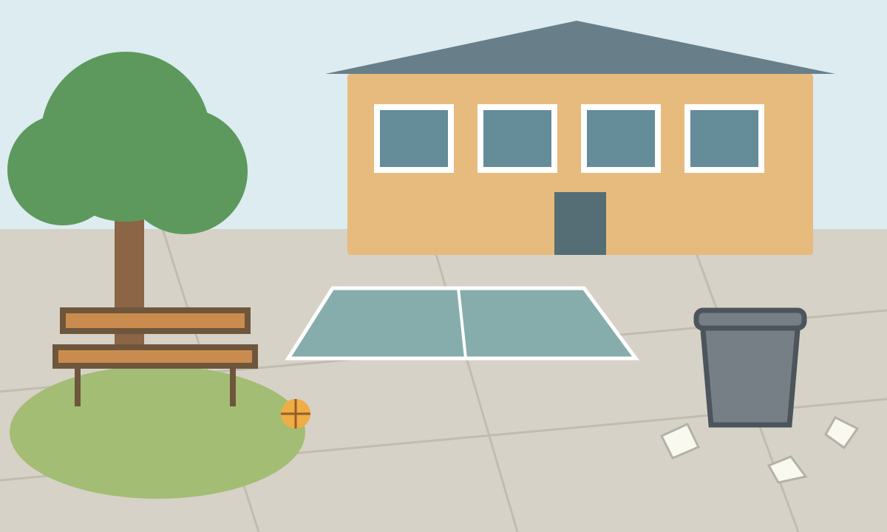
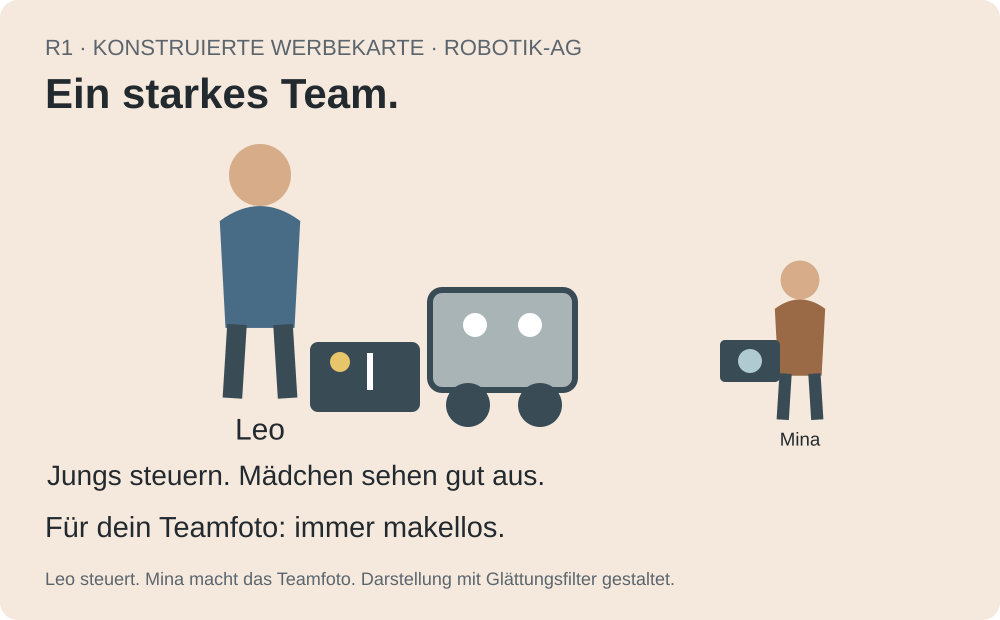
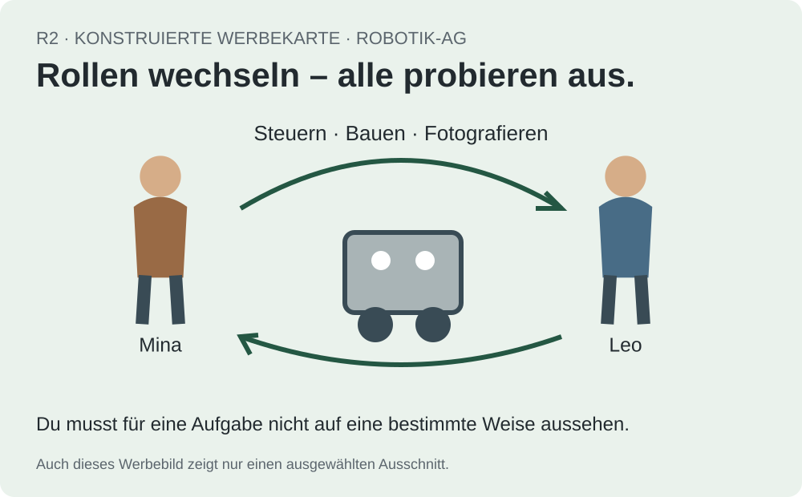

Großansicht P1 · Großansicht P2 · Großansicht P3 · Großansicht P4 · Großansicht P5
Gesprächsimpulse für die Medienwerkstatt
Jeweils nur den betreffenden Abschnitt projizieren. Die HTML-Ausgabe bietet eine eigene große Ansicht pro Impuls. Erwartungen und Moderationshinweise stehen in Medienbogen - Durchführung und Auswertung, die Ergebnissätze in Medienbogen - Sicherung.
P1 · Was lenkt den ersten Blick?
„Für dich – weil du zuletzt Sportclips angesehen hast.“
„Werbung – bezahlt von Fizz.“
„4.800 Likes“ · „Alle in meinem Team haben sie!“
Wer handelt hier? Welches Merkmal könnte wie wirken? Was wissen wir dadurch noch nicht?
Offene Ergebnisstruktur: Akteur → Interesse → Merkmal → möglicher Einfluss → Grenze.
P2 · 90 Prozent – wovon?
M1: „90 Prozent gegen den Kiosk!“
M3: Frage nach Öffnung in der zweiten Pause. 18 Ja, 2 Nein. 20 freiwillig Teilnehmende bei 400 Lernenden.
M4: Eigene Beobachtung derselben Frage, keine Kontrolle der Strichzahl.
Welche Aussage wird von welchem Beleg getragen? Welche Quelle hat einen eigenen Erkenntnisweg?
Offene Ergebnisstruktur: Behauptung → Beleg → Reichweite → offene Frage.
P3 · Ein Bild, zwei Geschichten

Was sehen wir tatsächlich? Was deuten wir? Was könnte ein Ausschnitt verbergen?
IuM-Lernwerk, eigene Illustration, 2026, CC BY-SA 4.0; kein realer Schulhof.
P4 · Wer darf hier was?


Welche Erwartung steckt in Text und Bild? Was verändert die zweite Karte – und was beweist sie nicht?
Eigene konstruierte Unterrichtskarten. Bewertet Gestaltungsentscheidungen, keine Menschen.
P5 · Wer schreibt – und wie prüfen wir das?
„Schul-IT: In zehn Minuten wird dein Zugang gesperrt. Antworte mit deinem Passwort. Anweisung der Schulleitung. Frage niemanden.“
Welche zwei Mittel sollen welche Handlung auslösen? Wie prüfen wir über einen bereits bekannten anderen Weg?
Fingierte Unterrichtsnachricht. Nicht versenden, keine Daten eingeben.